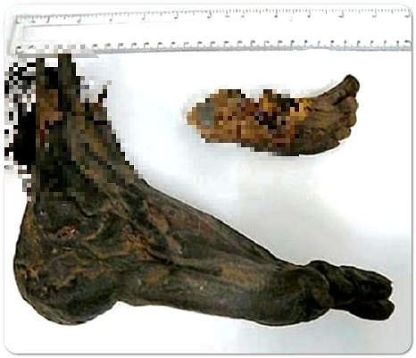

2007년 이후 캐나다 서부 브리티시 컬럼비아 주의 밴쿠버 섬과 미국 워싱턴 주 인근 세일리시 해 해안에서
인체에서 떨어져 나온 발(足)이 잇달아 발견되는 사건.
첫번째 발견 이후로 2019년 현재까지 운동화를 신은 발이 총 20개가 발견되었다.
사람 발이 발견되기 시작한 이래, 언론이고 여론이고 도무지 이해할 수 없는 일이라고 평하는 사건이다.
첫 사건 발생은 2007년 8월 20일로, 캐나다 제디디아(Jedidiah) 섬에서 보트를 타고 섬에 여행온 가족이 발견한 것이 사건의 시작이었다.
남성의 오른발이었는데 신발은 인도산 캠퍼스(Campus)표 신발로 2003년에 주로 인도에서 팔리던 제품이라는 사실이 밝혀졌다.
이로부터 일주일 후 8월 26일에 게브리올라 섬에서 인근 주민이 두번째 발을 발견했다.
남성의 오른발이었는데 발견 당시 이미 부패가 진행 중이었고 동물에 의해 훼손되어 있었다.
신발은 리복 운동화였는데 2004년에 북미를 중심으로 팔리던 것으로 당시 이미 단종된 제품이였다.
이때까지는 아직 화제가 되지 못했지만 2008년 2월 8일, 발데즈 섬에서 벌목공 2명이 세 번째 발을 발견했다.
남성의 오른발이었고 신발은 나이키 운동화였다. 문제는 이 장소가 첫 번째 사건이 일어난 제디디아 섬과 매우 가까웠기 때문에 주민들을 경악에 빠뜨렸다.
그로부터 석 달 후5월 22일 리치몬드의 커크랜드 섬의 섬지기가 북쪽 해변을 돌다가 4번째 발을 발견했다.
여성의 발이였으며 양말과 뉴발란스 신발이 신겨져 있었다.
그로부터 한달도 못 돼서 웨스탬 섬에서 5번째 발이 발견되었는데,
이 왼쪽 발은 3번째로 발견되었던 발과 동일인물이였다.
상황이 이렇게 되자 사람들, 특히 인근 주민들은 매우 불안해했다.
사건의 단서가 전혀 잡히지 않자 캐나다 연방 경찰은 2008년 7월부터 경찰관, 법의학자, 해양학자를 모아
대대적인 수사를 벌였으나 9개월째 전혀 단서는 물론 사건 간의 연관성도 잡지 못해 답답해했다.
신원이라도 찾기 위해 300개에 달하는 실종자 기록과 모두 대조했으나 이 역시 실패로 돌아갔다.
결국 경찰은 신발 상표, 크기, 판매 지역, 장소를 모두 공개하면서 제보를 받았았고,
수많은 제보가 들어왔으나 모두 신빙성이 떨어지는 가설에 불과해 사건에 진전은 없었다.
일부 사람들은 의도적인 발목 절단, 심지어는 연쇄살인까지 의심했지만 법의학자들은 수중에서는
모든 발목은 시체가 부패하면서 자연스럽게 떨어져 나간다고 설명한다.
발목이 꽤나 약한 부위이기 때문에 부패되면서 발과 나머지 몸체가 분리되었을 것이라는 얘기다.
8월 1일 미국 워싱턴 주에서 6번째 발이, 11월 11일 7번째 발을 리치몬드의 프레이저 강에서 강아지와 산책하던 다이애나라는 여자가 발견했다.
이후 최초로 발견된 2007년부터 1년, 길게는 2년 간격으로 계속해서 발목이 나오면서 이 사건은 불가사의한 사건으로 유명해졌다.
발목은 2020년 현재까지도 계속해서 발견되고 있다.
